Unscrew bottle cap
3.5× faster
Time per trial (min)
Success 3/3 with URAI and 3/3 for the reference.
Research2026
URAI · Universal Robot–Agent Interface
1Hexafuture Inc. 2Peking University 3Beijing Institute of Technology 4Tsinghua University
†Corresponding authors
Models build executable tools, code handles multi-phase motions, and models decide what to do next.
Overview
Frontier models can control robots, but reasoning through every reach, grasp, and retreat makes manipulation slow and token-intensive. We revisit code as policy with a different division of labor: models build executable tools, code handles multi-phase motions, and models decide what to do next. We introduce URAI (Universal Robot–Agent Interface), which couples a programming agent that constructs robot tools with an execution agent that uses them in a feedback loop. The programming agent writes reusable and task-specific tools from task intent and refines them through execution feedback and human guidance. The execution agent selects and parameterizes these tools from current observations; each call runs a complete motion locally before returning control to the agent. Unlike delegating subsequent decisions to a generated program, this design retains model-level decision-making between tool executions. Validated tool revisions persist across episodes without updating foundation-model weights, and a shared GUI and API make the same tools available to humans and agents. Across five RoboDojo tasks and four frozen execution agents, URAI raises aggregate success from 18.0% to 53.0% relative to direct fingertip control, with the largest gain on Swap Blocks; with the same tools, a program written in advance reaches only 24% against 56% for two agents deciding after each call. Three of the four agents also finish episodes 1.3–1.5× faster with 1.5–1.7× fewer execution-agent output tokens; DeepSeek-V4-Flash’s cost barely changes. We further evaluate URAI on seven real-world AgileX dual-arm tasks, spanning object manipulation, cloth folding, and human-interactive tic-tac-toe. URAI connects the coding and decision-making capabilities of frontier agents, organizing robot control around reusable tools that agents can both invoke and revise.
01Method
A programming agent writes and validates robot tools. An execution agent selects a tool and its arguments from the current observation; one call runs a complete multi-phase motion locally, and the agent decides the next step from the feedback. Adaptation happens in the tools, never in the model weights.
Within an episode: one tool per model call, run locally.
Execution agent → tool call (arm, pixels, …) → URAI: Ground (pixels → 3D), Plan (timed path), Execute (local, 50 Hz) → feedback + new observation → next decision.
Between episodes: the programming agent revises φ = (L, C, P); foundation-model weights θ stay fixed.
Failures and human guidance → programming agent → candidate φ = (L, C, P) → validate (contracts, regression, cost) → freeze → accepted tools in URAI for later episodes. Foundation-model weights θ stay fixed.
One schematic episode under each way of driving the robot with a frontier model.
one call per end-effector command
the model decides every step
many calls: slow and token-heavy
model calls
the model writes the program first
the code decides what runs next
handles only what the code checks
model calls
one call per complete, timed motion
the agent decides each next call
agent in the loop between motions
model calls
02Results
Five RoboDojo tasks with four frozen execution agents, seven real-robot tasks on an AgileX dual-arm platform, and one case study of tool evolution. All numbers are from the paper.
Claude Fable 5.1 and Claude Opus 5.5 in Claude Code, GPT-6 Astra in the Codex CLI, and DeepSeek-V4-Flash in an open-source coding agent control the same simulator either through URAI tool calls or natively, by commanding fingertip targets and gripper values. Each task has one episode per seed 0–4, each in a fresh agent session; only RoboDojo’s own terminal state counts as success.
Through URAI versus direct fingertip control, over four agents and five tasks. Every agent succeeds more often through URAI.
Same tools, two agents (GPT-6 Astra, Claude Opus 5.5): deciding after each call versus one program written in advance and run without the model.
For three of the four agents. DeepSeek-V4-Flash’s cost barely changes: about 5% less time and 9% fewer tokens.
Average success rate over the five tasks, per execution agent
Five episodes per task (seeds 0–4). The program control was run for GPT-6 Astra and Claude Opus 5.5.
Success, time and tokens per task
| Execution agent, condition | Pour liquid into cup |
Pour balls into vase |
Fold clothes |
Swap blocks |
Stack blocks |
Avg. SR (%) ↑ |
Time (min) ↓ |
Tokens (k) ↓ |
|---|---|---|---|---|---|---|---|---|
| DeepSeek-V4-Flash, native | 0.0 | 0.0 | 0.0 | 0.0 | 40.0 | 8.0 | 21.4 | 44.3 |
| DeepSeek-V4-Flash + URAI | 40.0 | 60.0 | 0.0 | 100.0 | 40.0 | 48.0 | 20.2 | 40.3 |
| GPT-6 Astra, native | 0.0 | 0.0 | 20.0 | 0.0 | 60.0 | 16.0 | 13.8 | 6.9 |
| GPT-6 Astra, program | 40.0 | 40.0 | 0.0 | 0.0 | 40.0 | 24.0 | 7.0 | 4.6 |
| GPT-6 Astra + URAI | 40.0 | 60.0 | 0.0 | 100.0 | 60.0 | 52.0 | 9.4 | 4.7 |
| Claude Fable 5.1, native | 0.0 | 0.0 | 20.0 | 0.0 | 60.0 | 16.0 | 25.0 | 52.8 |
| Claude Fable 5.1 + URAI | 20.0 | 40.0 | 20.0 | 100.0 | 80.0 | 52.0 | 17.4 | 30.4 |
| Claude Opus 5.5, native | 40.0 | 0.0 | 40.0 | 0.0 | 80.0 | 32.0 | 17.4 | 32.3 |
| Claude Opus 5.5, program | 0.0 | 40.0 | 0.0 | 20.0 | 60.0 | 24.0 | 15.1 | 38.0 |
| Claude Opus 5.5 + URAI | 40.0 | 60.0 | 40.0 | 80.0 | 80.0 | 60.0 | 13.4 | 20.0 |
Success is the official terminal state, five episodes per task (seeds 0–4). Avg. SR is the mean of the five per-task rates. Time and tokens average all episodes, failures included, and count execution-agent output tokens with reasoning. Program: one program over the same tools, written in advance and run without the model; its time includes both phases. Bold: within each agent, the best Avg. SR and the lowest time and tokens. Swap blocks: its tools bundle a task-level place-on-pad procedure with button pressing, so URAI and native control differ in tool semantics as well as call granularity; the program rows share these tools and give the cleaner contrast. Without swap blocks, URAI still leads for every agent, 42.5% against 22.5%. A person driving the same tools through the GUI succeeds in 23 of 25 simulated episodes.
Where the time goes. URAI replaces many short motion calls with fewer, longer ones: 3.5–10.0 calls per episode lasting 29–72 s each, versus 21.0–25.6 calls of 19–20 s natively. For Claude Fable 5.1, Claude Opus 5.5 and GPT-6 Astra, time outside robot and observation commands falls by about 45%, 38% and 32%. DeepSeek-V4-Flash shows the opposite pattern: its motion calls fall from 25.6 to 10.0, but time outside commands rises from 441 to 509 s. Coarser motion calls alone do not ensure lower total cost; the execution agent’s observation and decision behavior also matters.
Our AgileX PiPER-X dual-arm system with four RealSense RGB-D cameras runs seven tabletop tasks, all with GPT-6 Astra as the execution agent calling URAI tools. Three tasks have a published result of the same model on other hardware; for these, each URAI number is the mean over three trials, failures included.
3.5× faster
Success 3/3 with URAI and 3/3 for the reference.
2.7× faster
Success 3/3 for both; the robot lost none of three games.
2.4× faster
4.7× fewer output tokens
Success 3/3 with URAI; 19/20 for the reference.
The references are published runs of GPT-6 Astra on other hardware: GPT-Policy’s dual-arm tasks R3 and R8, and Robocurve’s block placement under direct end-effector control on YAM arms with a 25% speed cap and a 20-call budget. There is no same-robot step-by-step baseline, so these ratios are not causal estimates of a speedup. Block-into-bowl time is 61.3 s per trial (shown as 1.0 min); the first bottle-cap trial excludes unmetered diagnosis and repair.
Four tasks have no published same-task reference and are reported for URAI alone, ten trials each; success requires the whole task.
PnP(…)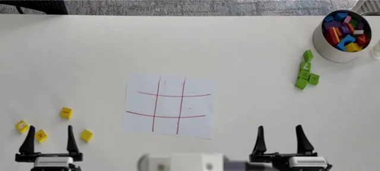
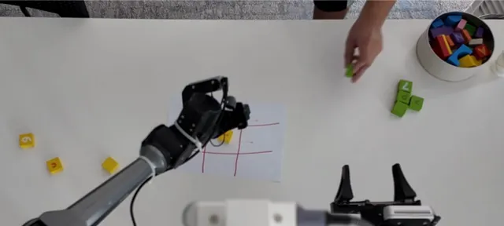
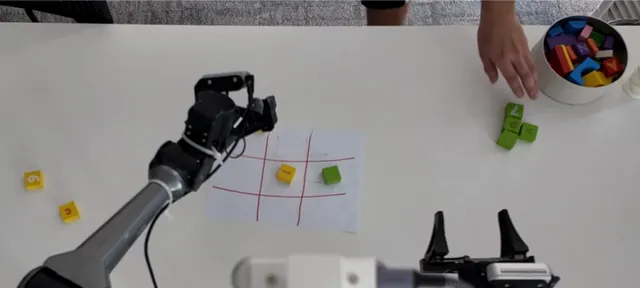
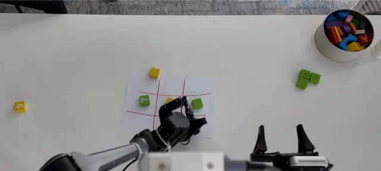
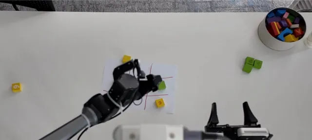
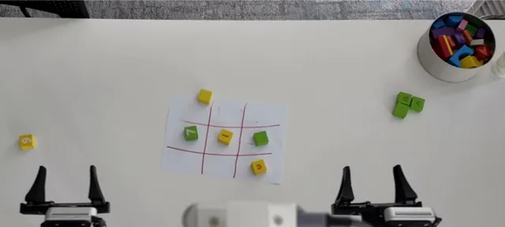
bottle_cap_twist(…)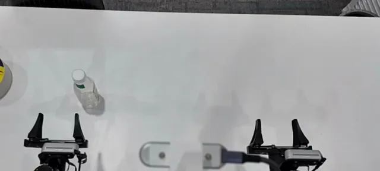
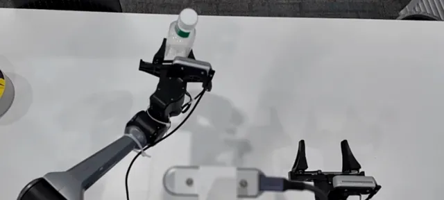
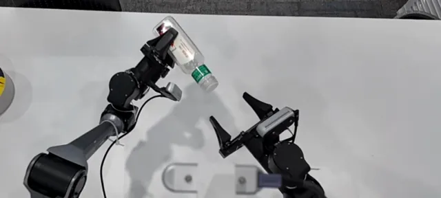
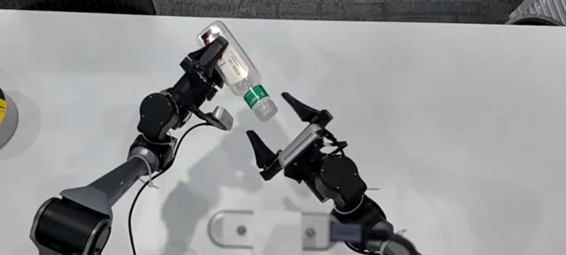
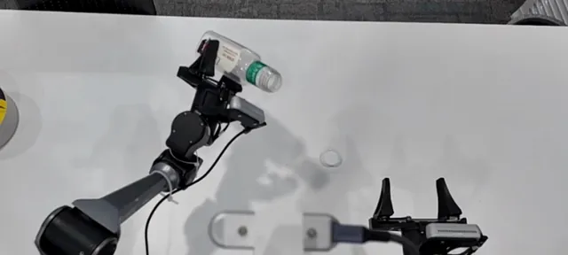
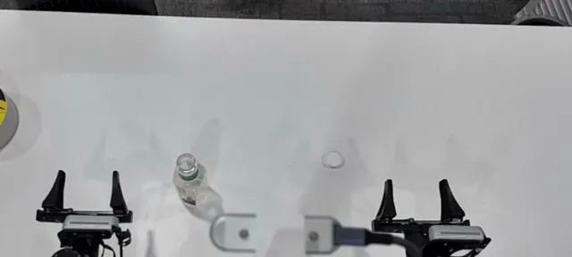
PnP(…)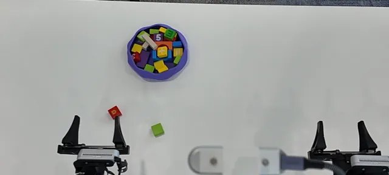
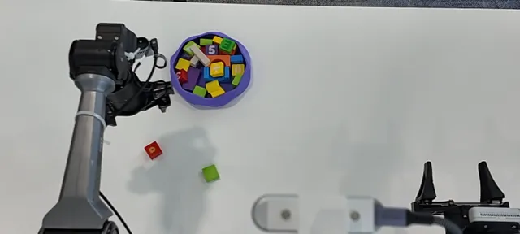
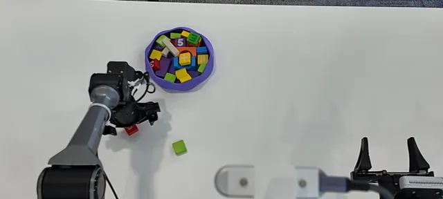
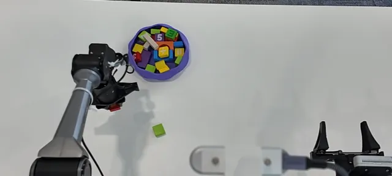
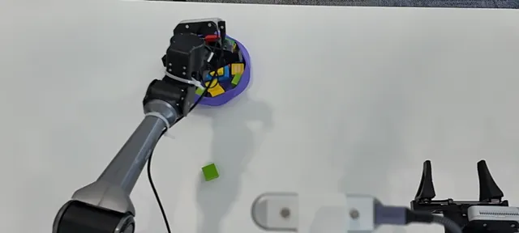
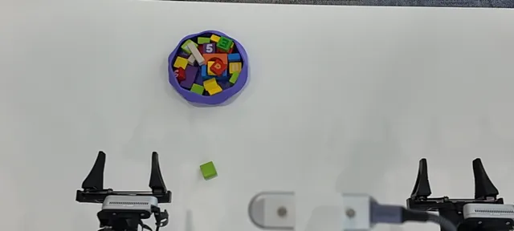
PnP(…)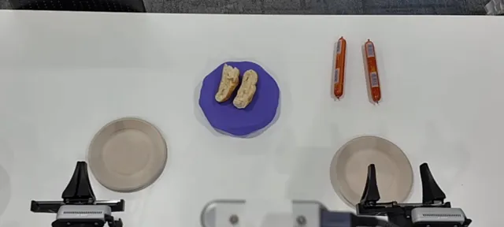
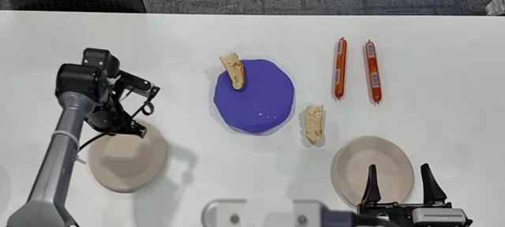
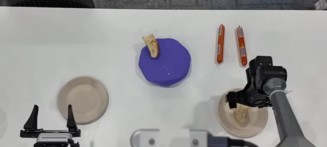
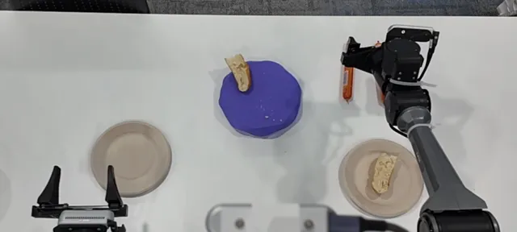
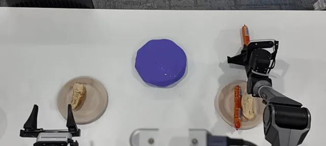
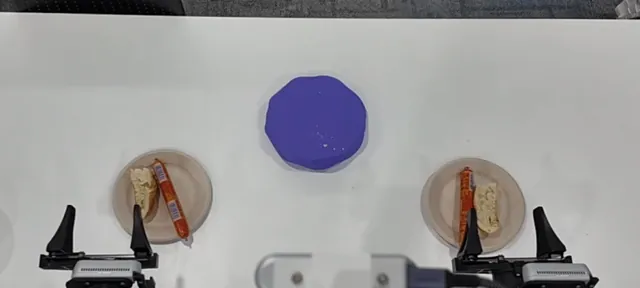
toss(…)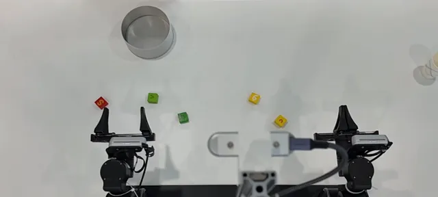
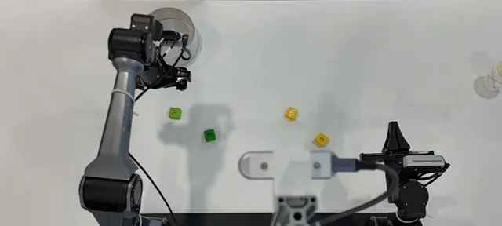
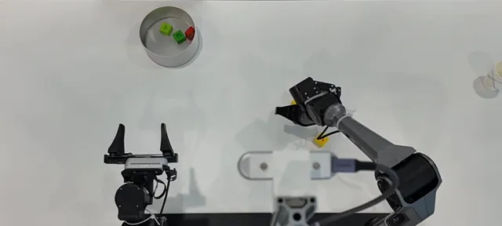
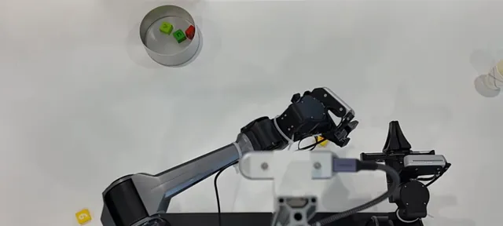
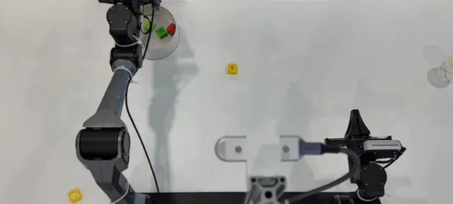
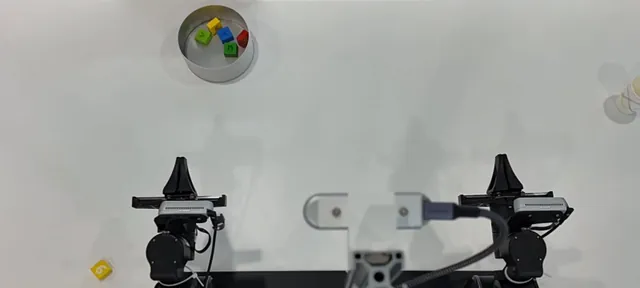
pour(…)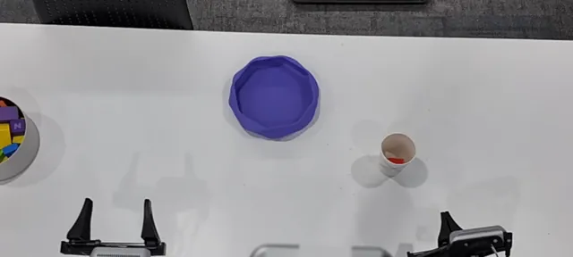
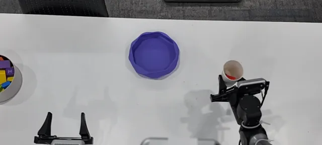
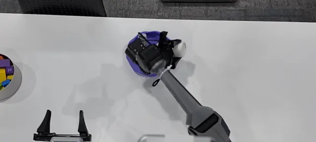
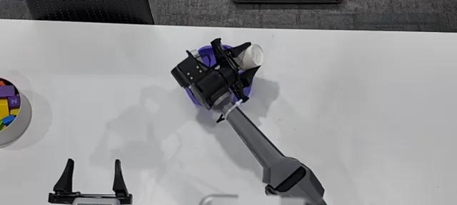
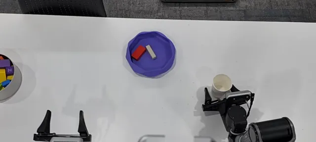
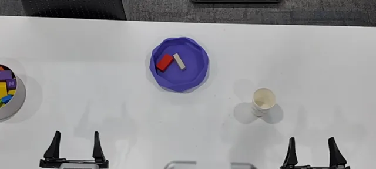
PnP(…)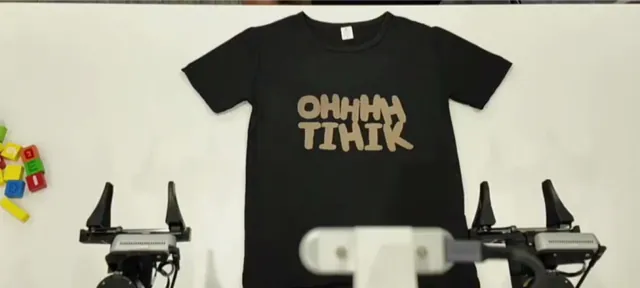
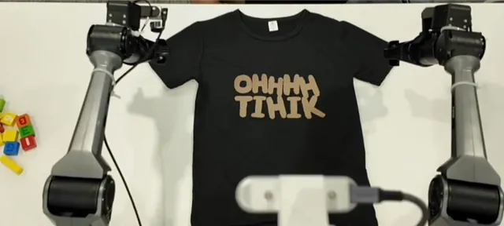
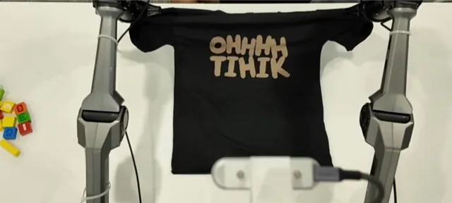
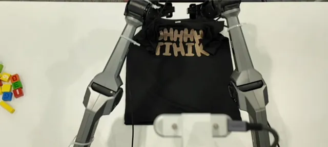
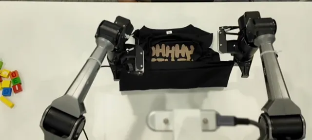
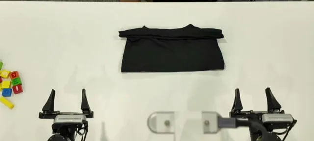
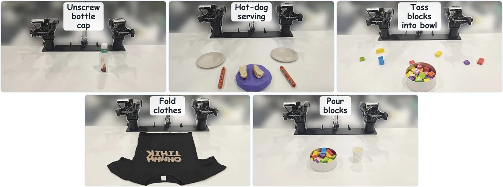
Steered by the author in natural language, the programming agent revised the existing two-point PnP tool seven times instead of writing a folding routine. The initial version rejected every click on the shirt as a large rigid object; the revisions add sheet pinching with local thickness checks, synchronized dual-arm transport, outward wrist tilt while carrying, vertical release, and a drop height and clearance taken from depth. Each version keeps the call signature, ships with unit tests, and has no branch on seed, garment, or task name.
The frozen final version is tested by the four frozen execution agents in fresh sessions, choosing pixels themselves. With this tool, choosing pinch and drop points is the agents’ main difficulty: in most failed GPT-6 Astra and Claude Opus 5.5 episodes, the first sleeve pinch sits at the sleeve tip, where the fingers close on nothing.
Scope. The measurements cover five simulated and seven real-robot tasks with few episodes per cell; five episodes per cell do not establish per-task differences. Tool programming and the author’s steering of it cost unmetered time and tokens that may offset the execution-phase savings, and the interface is validated on one simulator and one position-controlled dual-arm platform without force regulation.
03Citation
@misc{ge2026urai, title = {Make Code as Policy Great Again: Frontier Agents Write, Call, and Evolve Robot Tools}, author = {Shijia Ge and Alex Zhou and Jianshu Zeng and Yexing Wan and Di Wu and Zelin Zheng and Yazhe Wang and Zhiqi Jia and Xuan Shangguan and Jay Zhu and Yijun Liu and Lingyu He and Sihang Wu and Xiao He and Hongcheng Gao}, year = {2026}}